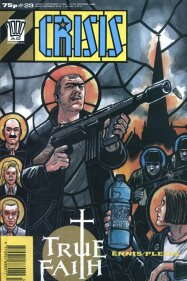
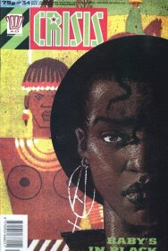
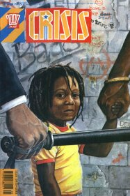
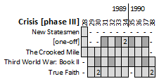

|  |  |  |
| Crisis #29 by Warren Pleece | Crisis #34 by Sean Phillips | Crisis #37 by Robert Blackwell |
The third phase of Crisis is where it starts to lose cohesion, as a third long-form strip is replaced with a series of one-offs, thus hanging the hopes for readership continuity on just two strips.
The contemporary realism of two of the stories from the second phase (Troubled Souls & Sticky Fingers) is replaced by the nihilistic melodrama of True Faith.
New Statesmen: Prologue
Created to serve as an opening chapter for a reprint, this narratively seems to be more of a post-script summary, and so doesn't work too well for its intended purpose (as the foreshadowing too often seems like an open spoiler).
This is the last we get of New Statesmen, which seems a shame as there was a rich vein of characters from which to tell stories.
[The one-off slot]
These one-offs tend towards the semi-autobiographical and often feature strong messages of social justice, although sometimes they're just memorable slices of life.
Continues into the next phase...
The Crooked Mile
A one-pager on the back cover in which an everyman angel passes comment on some aspect of contemporary society.
Ends in this phase.
Third World War: Book II (part 2)
Chief Inspector Ryan's dark obsession (and murderous impulses) aimed at black women focus strongly on Eve but (true to form) as she rebuffs his drooling advances (disturbingly wrought by Hicklenton) his rabid thoughts turn to vengeance and punishment. In that regard, the story here is less about black empowerment and more about a depraved individual - although it's clear that there's a lot of allegory at work here.
Eve decides to join the Black African Defence Squad rather than continue her government-sponsored international interdiction job, and there's some time spent fleshing out Liat, the leader of BADS (although he himself seems governed by a black verson of Mills' triple goddess from Sláine).
It all goes a little Mission Impossible towards the end before running four episodes of epilogues. Again there's a strong focus on Ryan, now giving him a somewhat valid reason for his hatred (his mother's murder), which dilutes the idea of racism being an evil in and of itself.
Continues into the next phase as Book III...
True Faith
A dark tale that tries to explore the mindset of nihilistic killers. Nigel's an outspoken aethiest loner at high school that fancies Angela from the Scripture Union - but his advances are taken by her as a desire to join. He crosses paths with a grieving widower who's decided to murder God (by torching churches and gunning down vicars), and who needs an assistant.
It's like Batman and Robin, if Batman were a deranged, murderous plumber hellbent on the elimination of Christianity and Robin were an inept young man with incel-like sexual anger issues coerced into being his assistant. Deciding that the Demented Duo aren't quite enough, things are turned up to eleventy-stupid when a far more organized supervillain with the same agenda (and an army of uniformed, highly armed goons) recruits them.
The disturbing denouement seems to glamorize perpetrators of mindless, murderous violence as a solution to assholes. Thing is: the punishment for assholes shouldn't be death, should it?
One series and done.
{% include_relative crisisMenu.html %}